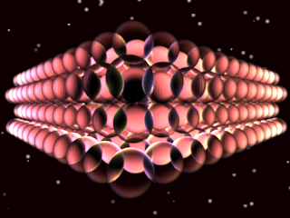
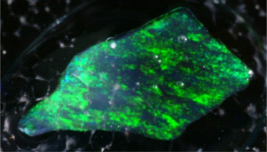
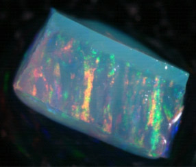
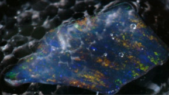
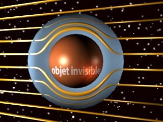
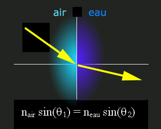
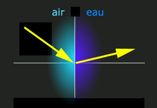

|
|
Navig.
page/section


_____
|
|
Pages soeurs
I, A propos des liants
II, Bulles, siccativ., struct. élec.
III, Caséine, phosphore, dissociation
IV, Les orbitales
V, L'aérogel
VI, Polarisation de la lumière
VII, Sfumato et diffusion Rayleigh
VIII, Les interférentielles
IX, Dextrine, farine et chiralité
X, L'ocre bleue
XI, Les métamatériaux
XII, Le jaunissement
XIII, Laser etc.
XIV, L'holographie
XV, L'holographie numérique
XVI, Extérieur, intérieur, chaux
XVII, L'électrolyse et les ions
XVIII, L'électricité, un peu plus loin
XIX, Oxydation, métaux
XX, Les échelles
XXI, Nature et évolution des résines
XXII, Le mouillage pigmentaire
XXIII, La molette
XXIV, Blanche neige
XXV, Lumière et matière
XXVI, Magnétisme
XXVII, Ambre et vieilles branches
XXVIII, L'origami miroir
XXIX, Le feu
XXX, Peau du métal
XXXI, La ville en un souffle
XXXII, Oxyder des matériaux
XXXIII, Ocre bleue, une solution
_____
|
Copyright © www.dotapea.com
Tous droits réservés.
Précisions cliquer ici
|
|
| |
|
|
Les dialogues sur la physique-chimie
appliquée aux arts
Chapitre
XI
Les métamatériaux
Un tour d'horizon sur les échelles, le
passé, le présent et les perspectives de certains univers minuscules.
|
 |
dial dial
dial
|
Emmanuel : La science actuelle semble redécouvrir, parfois
recréer un certain nombre de procédés anciens ou naturels faisant
intervenir ce que l'on nomme aujourd'hui des "métamatériaux". Avant
tout, de quoi s'agit-il ?
|
|
|
|
Jean-Louis : En simplifiant un peu, un
métamatériau est un matériau dont les propriétés découlent non de sa
nature, mais de sa structure.
Les exemples les plus parlants peuvent être pris dans le domaine de
l'optique, c'est aussi le domaine dans lequel la recherche est la plus
active.
Pour qu'un matériau possède des propriétés particulières vis à vis de la
lumière, il faut que les détails de sa structure aient des dimensions
caractéristiques de l'ordre des longueurs d'onde de la lumière en
question et même, préférablement, plus petites.
Pour la lumière visible cela implique des structures de l'ordre de la
fraction de micromètre, pour les micro-ondes de l'ordre du décimètre.
|
|
Les
métamatériaux définis par leur structure
|
|
Vite, un exemple! Les opales sont des pierres précieuses formées de
l'assemblage régulier de billes sub-micrométriques de
silice.

|
|
L'opale et ses billes |
|
La silice pure est un matériau transparent, comme le verre. Or les
opales ont cet aspect "opalescent" caractéristique et recherché. Cette
propriété optique particulière résulte non pas de la nature (silice) du
matériau mais de sa structure interne, l'assemblage régulier de billes
de ~0.1 - 0.5µm (microns) de diamètre. Les opales sont des
métamatériaux.
Emmanuel : On a vu que
l'aérogel est également constitué de
billes de silice, mais beaucoup plus espacées. Le verre est-il également
constitué de billes, mais organisées différemment ? Je me souviens que
tu écrivais que le verre est un liquide. On dit aussi que c'est de la
silice amorphe, mais comment ça se présente à cette échelle, de la
silice amorphe, est-ce qu'il y a encore des billes ou bien est-ce un
magma totalement informe ?
Jean-Louis :
L'aérogel est fait de billes de taille variable et leur répartition est
aléatoire. Dans les opales les billes sont non seulement de taille
rigoureusement identique mais elles sont parfaitement organisées dans
toutes les directions. Les verres ne comportent aucun espace vide et
sont totalement homogènes.
On sait faire des opales artificielles en "empilant" des micro-billes de
silice. En changeant le diamètre des billes, on change la couleur des
opales ainsi produites.



Photos : courtoisie de Charles Hirlimann, CNRS
© Copyright
Emmanuel : Donc là, ce sont des opales
synthétiques ?
Jean-Louis :
Oui, faites maison.
Emmanuel : Ca marche par absorption ? En
modifiant la taille des billes, j'absorbe ou je réémets telle ou telle
longueur d'onde ?
Jean-Louis :
C'est encore un phénomène
d'interférences multiples. Le fait d'avoir des billes empilées
régulièrement fait que les propriétés optiques du matériau varient
périodiquement.
Cela crée "un réseau d'indice" ou "réseau de phase" qui donne lieu à des
absorptions sélectives de certaines longueurs d'ondes (couleurs). C'est
un peu comme les ailes des scarabées.
Emmanuel : L'opale du haut semble ne
renvoyer que du vert. Les autres couvrent un plus large spectre. C'est
fonction de la taille des billes ?
Jean-Louis :
Oui. Les irisations viennent de ce que l'organisation n'est pas
parfaite, sinon les couleurs seraient homogènes.
Emmanuel : Si l'on pouvait créer
précisément les irisations que l'on veut, cela pourrait ouvrir des
champs intéressants pour les arts visuels. Entre autres.
Jean-Louis :
Du fait de la petitesse des longueurs d'onde visibles, les opales sont
quasiment le seul métamatériau "optique" que l'on sache fabriquer à ce
jour. Si on transporte le problème à des longueurs d'ondes supérieures
(micro-ondes), on peut faire beaucoup mieux.
|
|
Faire varier la couleur des billes d'opale est maintenant possible. Lire
passage in « Hi-tech » |
|
Par exemple on est sur le point de fabriquer un métamatériau qui aurait
la propriété de rendre un objet invisible aux micro-ondes (lien).
Un objet enveloppé dans ce métamatériau ne perturberait pas la
propagation des ondes électromagnétiques (uniquement dans la bonne gamme
de fréquences), comme schématiquement représenté ci-dessous:

Pour le domaine visible, ce n'est pas pour demain.
|
|
L'invisibilité |
|
Emmanuel : Ca semble très, très, très
calculé pour repartir exactement au bon endroit en évitant soigneusement
l'objet central sans qu'il y ait déformation apparente. Il est si bien
évité qu'il risque fort d'être aveugle, ne recevant plus le rayonnement
concerné.
Jean-Louis :
C'est le gros défaut du système !
Mais si on savait faire de tels matériaux dans le domaine optique, on
aurait des lentilles capables de focaliser la lumière mieux que ne le
font les lentilles ordinaires. Si on savait faire des gants de chirurgie
invisibles, un chirurgien (ou un plombier sous un évier) ne verrait plus
ses mains dans son champ visuel mais seulement son outil. On sait par
contre faire des métamatériaux pour les ultrasons. Pour les sons
ordinaires, la faisabilité existe mais la réalisation pratique serait
trop encombrante et coûteuse.
|
|
Invisible... et aveugle |
|
Les propriétés particulières de
métamatériaux, qui résultent de leur structure, peuvent faire par
exemple que leur indice de réfraction soit négatif.
Emmanuel : J'ai du mal à comprendre ce que
cela signifie dans le cadre du rapport entre indice de réfraction et
vitesse de la lumière (voir
lien). Par contre, sur le plan angulaire, qu'en dis-tu ?
Jean-Louis :
Comme l'indice de l'eau est supérieur à celui de l'air, le rayon
réfracté est plus proche de la normale à l'interface (la droite
perpendiculaire à l'interface).

Dans le cas des métamatériaux avec un indice de réfraction négatif, on a
le schéma suivant :

|
|
Un étrange indice de réfraction |
|
Emmanuel : Parlons de tout autre chose. Le
papillon Papilio ulyses mâle arborerait aussi des structures
microscopiques remarquables (des structures en écailles de moins d'un
micron formant des sortes de puits organisés en nids d'abeilles), bien
que l'indice de réfraction qu'elles affichent n'est pas négative (1,6).
Elles lui permettent d'obtenir ce qu'aucun artiste, artisan ou créateur
de mode ne peut réaliser avec de simples pigments : un « noir ultime »
(dit ultra-black). La lumière semble se perdre dans ces cavernes
infimes. Là aussi, c'est la structure et non la matière même qui est à
l'oeuvre. Le papillon doit évidemment se réjouir de récupérer sous forme
calorique presque toute l'énergie de la lumière.
Richard Brown, chimiste au Britain's National Physical Laboratory de
Teddington (Royaume-Uni), a créé une sorte d'enduit "piqueté", au nickel
et au phosphore qui produit un effet similaire au noir ultime naturel de
Papilio ulyses (2002), étudié initialement par l'équipe de Pete
Vukusic à l'université d'Exeter, également au Royaume-Uni. Le naturel a
directement inspiré le synthétique et celui-ci concerne les arts
plastiques et domaines voisins.
Mais qu'en est-il des échelles de ces phénomènes qui semblent très
différents ?
Jean-Louis :
L'invisibilité serait le résultat de la mise en oeuvre de ce qu'on
appelle les métamatériaux. Par contre, le "noir ultime" est plus proche
du nanométrique mais ça reste tout juste sub-micrométrique pour certains
détails.
L'invisibilité et le noir ultime, ça n'a rien à voir l'un avec l'autre
ni à proprement parler avec les nanotechnologies.
|
|
Le noir ultime |
|
Emmanuel : Justement, un article publié
dans
Le Monde scientifique en décembre 2006 donne une définition des
"technologies micrométriques" par opposition aux nanométrique : les
microtechnologies cisèleraient (notamment
pour fabriquer des circuits intégrés) alors que les
nanotechnologies assembleraient... Est-ce
si tranché simplement en fonction de la dimension de l'univers où l'on
opère ?
Vers 2000 on a créé un microprocesseur où les circuits étaient séparés
de sept atomes (de silicium je crois, pas sûr), ce qui est, disait-on,
le minimum absolu pour la technique classique au-delà de quoi on passe
aux processeurs quantiques encore expérimentaux...
Jean-Louis :
C'est même pas expérimental, juste encore théorique.
Emmanuel : D'accord. A vue de nez, sept
atomes de silicium, c'est nanométrique. Peut-on vraiment ciseler quelque
chose de cette taille et pourquoi n'aurait-t-on pas recours de
préférence à des assemblages ? Intuitivement, qui peut le plus (petit)
peut le moins (petit) dès lors que l'on peut assembler.
|
|
Nano versus micro... |
|
Jean-Louis :
C'est le combat du "bottom-up" contre le "top-down". La technologie
silicium classique grave le silicium au moyen de masques photographiques
qui sont projetés en réduction sur le matériau (top-down, du haut vers
le bas). On atteint actuellement les limites de résolution, on aura du
mal à faire beaucoup plus petit, la technologie devient atrocement
lourde. Une "fonderie" de silicium coûte l'équivalent du PIB d'un petit
état comme le Luxembourg.
D'une part en effet, les propriétés de la matière changent radicalement
si on diminue trop la taille des composants, mais surtout pour faire une
structure aussi petite il faut en rater 10 000, ça coûte cher, et en
plus on ne sait pas faire des circuits complexes.
L'alternative sur laquelle on travaille c'est le bottom-up, "par le
bas", utiliser l'auto-assemblage de molécules pour fabriquer des
structures de plus en plus grosses. On ne sait pas assembler des trucs
aussi petits. Pour le moment on compte sur l'auto-assemblage,
l'auto-organisation. C'est pas tout cuit.
|
|
...ou plutôt bottom-up versus top-down ? |
|
Emmanuel : Revenons aux questions
d'échelle. La longueur d'onde de la lumière visible se situe environ
entre 400 et 800 nanomètres. Qu'en est-il des atomes, des molécules, des structures que
nous évoquons ?
Jean-Louis :
Les atomes font tous quelque chose comme 0,1 nanomètre de "diamètre".
Les molécules font n'importe quoi, dans tous les sens et toutes les
directions entre 0,2nm et plusieurs micromètres. Une molécule d'ADN que
tu déroulerais ferait 0,5nm de diamètre et quelques microns de long !
Les molécules de cristal liquide de ton écran d'ordinateur font 0,5nm de
diamètre et 2nm de long. Donc toute molécule est "naturellement"
nanométrique. C'est un nano-objet.
La terminologie est imprécise, mais nanotechnologie implique que 1) ça
soit de taille entre 1 et 100nm, 2) ça soit auto-organisé si c'est
moléculaire ou atomique.
Structures naturelles micrométriques : quasiment tout ce qui est
organique (cellules, noyaux, etc.). La structure des ailes de scarabée,
les yeux des mouches,....
Structures naturelles vraiment nanométriques : par exemple l'épaisseur
des membranes cellulaire qui est quasi-universellement de 5nm, mais les
objets eux-mêmes sont rarement aussi petits, en tout cas pas ceux que
"le grand public" connait.
|
|
Les échelles
(voir aussi le
chapitre XX) |
|
Emmanuel : Faisons pour terminer un petit tour dans
l'univers des métamatériaux du passé - dont la redécouverte suscite un
certain intérêt - pour essayer de situer la question maintenant sous le
rapport du temps :
* L'argile
turquoise des Mayas. Les Mayas auraient mis au point une étrange
matière : une argile teinte par de
l'indigo. Des argiles de type
paligorskite (et aussi sépiolite, qui donnerait de moins bons résultats)
permettaient d'obtenir une substance pigmentaire turquoise. Éric
Dooryhée et ses collaborateurs du CNRS de Grenoble ont pu reproduire le
phénomène avec des matériaux nanoporeux. Ils espèrent obtenir des
colorants stables et non-toxiques. [*]
* Les glaçures
iraniennes. La nucléation (tu en parlais il y a peu -
lien) et la « croissance » de nanoparticules de métaux et d'alcalis
dans des glaçures iraniennes du X au XIIIème
siècles indiquent également un emploi précoce de matériaux très
particuliers qui semblent éveiller l'intérêt des chercheurs
d'aujourd'hui. [*]
* Les épées de Damas.
Très étrange acier où l'on a trouvé récemment des nanotubes de carbone.
Je cite un article publié dans Le monde du 20/11/2006 : « Selon
la légende, les épées de Damas pouvaient couper en deux un mouchoir de
soie flottant dans le vent. Une prouesse qui a fait la réputation de ces
armes dont l'acier, et surtout le tranchant, étaient redouté des croisés
dans leur combat contre les musulmans. Leur secret tiendrait de la
répartition dans la lame d'un carbure de fer - la cémentite - qui
dessinait à leur surface de magnifiques reflets moirés. »
« Ces nanotubes sont devenus apparents sur l'échantillon fourni par
le Musée historique de Berne (Suisse) après sa dissolution dans de
l'acide chlorhydrique. Cette opération a permis également de mettre en
évidence "des nanofibres de cémentite, qui auraient été encapsulées et
protégées par les nanotubes de carbone", précisent les chercheurs dans
leur communication.
Pour réaliser ces armes, les forgerons utilisaient un acier spécial
inventé en Inde et importé de ce continent sous forme de lingots - le
wootz - (.) »
____
* ESRF (European
Synchrotron Radiation Facility) Newsletter - n°44 - déc. 2006 - "Science
and art" -
Lien
|
|
Passé et perspectives des métamatériaux :
des exemples |
|
Chapitre suivant |
Retour
début de page
|
|

 Communication
Communication


|
|